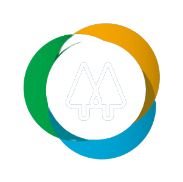

<mat-sidenav-container class="sidenav-container">
  <mat-sidenav #drawer class="sidenav" fixedInViewport
      [attr.role]="(isHandset$ | async) ? 'dialog' : 'navigation'"
      [mode]="(isHandset$ | async) ? 'over' : 'side'"
      [opened]="(isHandset$ | async) === false">
      
    <mat-nav-list class="align">
      <a mat-list-item href="#" class="icon">
        <i class="bi bi-search"></i>
      </a>
      <a mat-list-item href="#" class="icon">
        <i class="bi bi-star"></i>
      </a>
      <a mat-list-item href="#" class="icon">
        <i class="bi bi-chat-left-dots "></i>
      </a>
      <a mat-list-item href="#" class="icon">
        <i class="bi bi-sliders "></i>
      </a>
      <a mat-list-item href="#" class="icon">
        <i class="bi bi-bank "></i>
      </a>
    </mat-nav-list>
  </mat-sidenav>
  <mat-sidenav-content class="background-body">
    <mat-toolbar class="header-space">
      <button
        type="button"
        aria-label="Toggle sidenav"
        mat-icon-button
        (click)="drawer.toggle()"
        *ngIf="isHandset$ | async">
        <mat-icon aria-label="Side nav toggle icon">menu</mat-icon>
      </button>
      <span>
       <h1><b>Nova Admissão Colaborador</b></h1>
       <h5>Cadastro / Admissão do Cooperado / Nova Admissão de Cooperado </h5>
      </span>
      <div class="header-notification">
        <div>
          <i class="bi bi-bell"></i>
        </div>
        <div>
          <i class="bi bi-person-circle"></i>
        </div>
      </div>
    </mat-toolbar>
    <ng-content></ng-content>
    <mat-toolbar class="footer-space">
        <app-custom-button [disable]="false" [name]="'Iniciar Nova Admissão'" ></app-custom-button>
        <app-custom-button [disable]="false" [name]="'Dicas para a Abertura da Conta'" [dark]="false"></app-custom-button>
    </mat-toolbar>
  </mat-sidenav-content>
</mat-sidenav-container>


